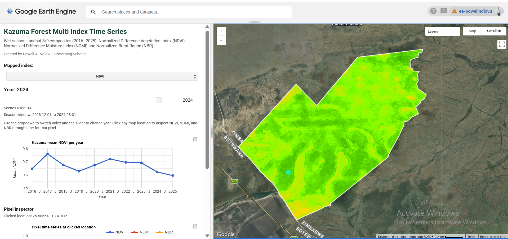
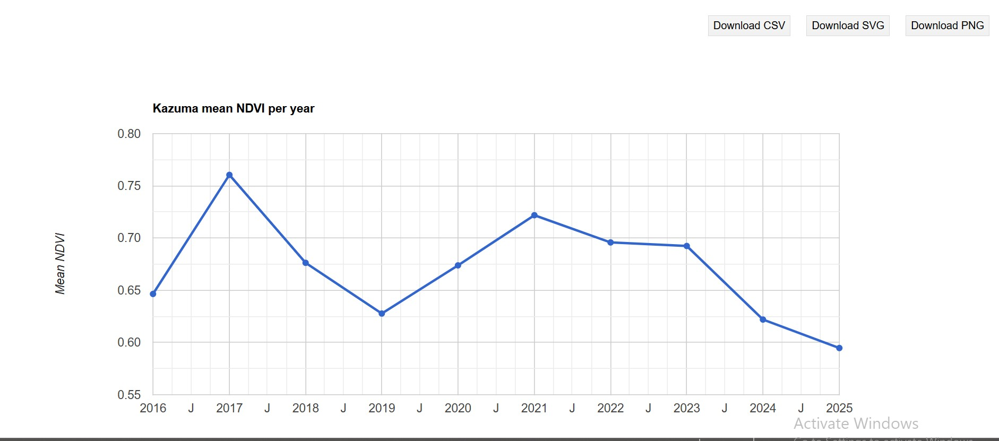
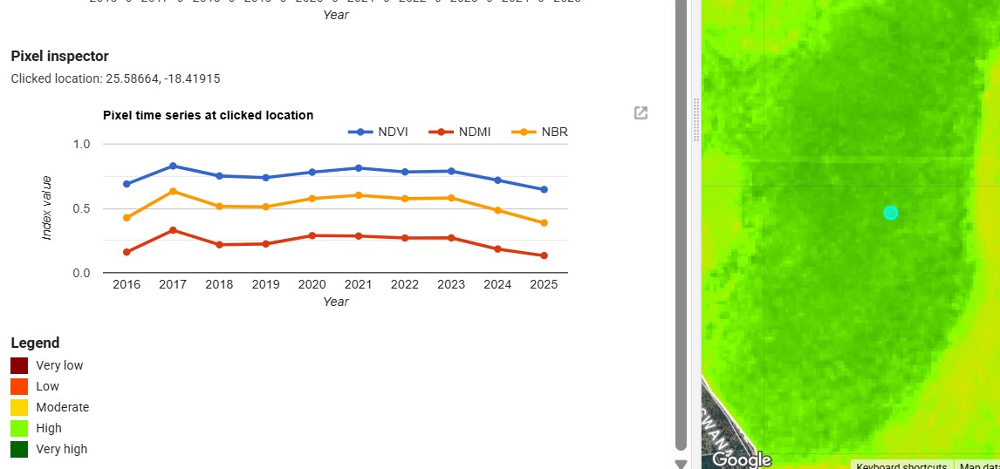

An interactive Earth Engine application for monitoring vegetation condition, moisture dynamics, and fire-related disturbance proxies in Kazuma Forest, Zimbabwe, from 2016 to 2025.
The app integrates wet-season Landsat 8/9 composites with NDVI, NDMI, and NBR to support exploratory environmental analysis through maps, annual trend charts, and pixel-level inspection.

Main application interface showing the multi-index map, year slider, index selector, and analytical panels.
Forest monitoring often suffers from fragmented reporting and limited access to interactive tools that show how vegetation condition changes over time. Kazuma Forest is ecologically important, yet decision-makers benefit more from interpretable spatial evidence than static screenshots.
This project was developed to provide a more accessible, interactive way to examine vegetation greenness, moisture response, and fire-related disturbance patterns across a ten-year period.
Study area: Kazuma Forest, Zimbabwe
Time period: 2016–2025
Seasonal window: Wet-season composites, using December of the previous year to March of the selected year
Satellite data: Landsat 8/9 Collection 2 Level 2
Processing: Cloud masking, surface reflectance scaling, annual compositing, index derivation
Indices: NDVI, NDMI, and NBR
Users can move through annual composites from 2016 to 2025 to observe spatial changes over time.
The app switches dynamically between NDVI, NDMI, and NBR for comparative interpretation.
Built-in charts summarize how each index changes through time at the study-area scale.
Clicking the map reveals local NDVI, NDMI, and NBR time series for a selected pixel.
This web app moves beyond static cartography by allowing users to investigate long-term vegetation dynamics interactively. It is useful for environmental monitoring, conservation planning, and communicating remote sensing outputs to non-technical audiences.
It also demonstrates how geospatial analytics can be turned into a deployable decision-support tool, rather than remaining only as code in a notebook or script.
The application enables users to identify spatial variability in greenness, moisture, and disturbance proxies across Kazuma Forest. By linking annual maps with trend charts and pixel inspection, the tool supports interpretation of both broad temporal patterns and localised changes.
This creates a stronger analytical workflow than using static one-year maps in isolation.

